Pilipino Cultural Night hosted annually by Cal Poly's Pilipino Cultural Exchange (PCE) Club. It is a nationwide event held by different Filipino cultural clubs in the United States to tell the stories of the Filipino culture through mediums like dance, song and script.
This year's PCN will be hosted on April 24th and 25th; it will be the 31st annual PCN held at Cal Poly.
Learn more about the students participating!
Workshoping Culture
PCE club members prepare for there annual event, PCN.
![Baker 101, a typically silent room throughout the day, is filled with chatter as students fill in at 7p.m. The Pilipino Cultural Exchange Club holds in Pilipino Cultural Night Workshops in Baker every other Friday. PCE hosts PCN annually in the Performing Arts Center to showcase their culture and club members talent. There are three different aspects to PCN: script, modern and Kasayahn. Script includes a play in which participants are assigned lines and act, modern is a modern dance group and Kasayahn performs traditional Filipino dances. PCE members who chose to participate in PCE attend two weekly meetings for each aspect they pick along with a three hour workshop every Friday.](img/1.jpg) 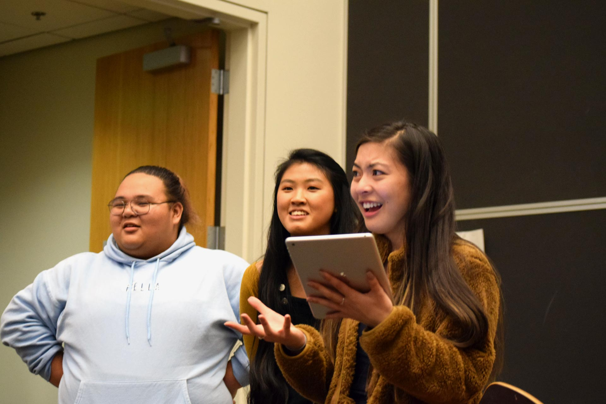
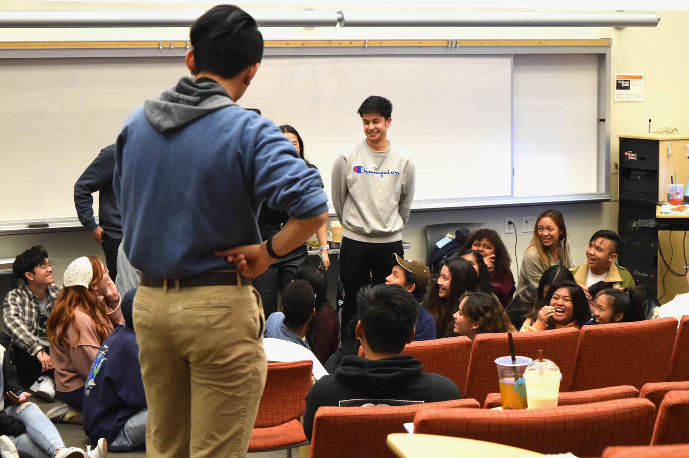
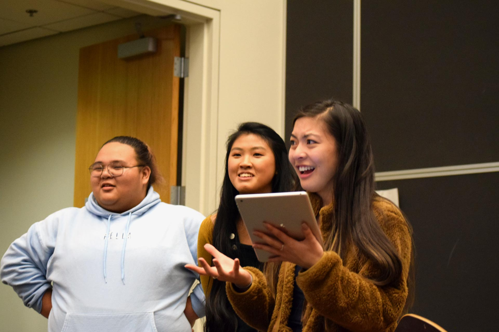
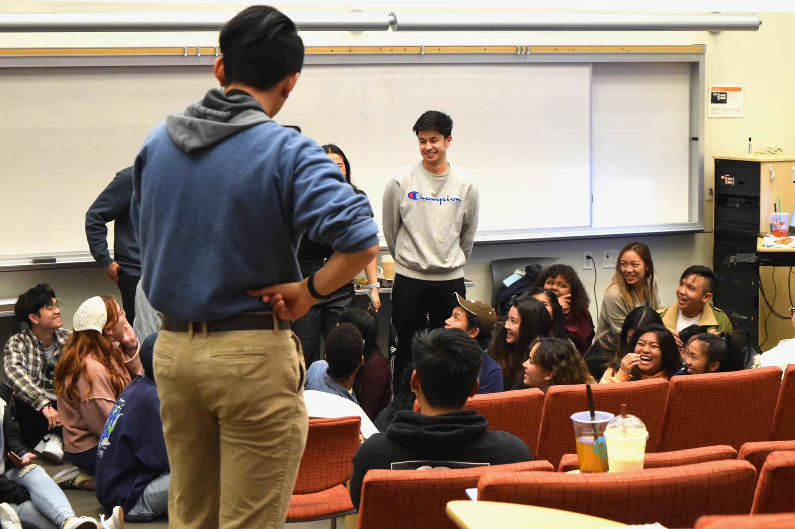
![Club members are expected to conduct presentations during the workshop about issues salient in the Filipino community. “We want to showcase to the members how the club came to be and the history behind the show,” Britney Lozano, a second year Chemistry major, said. The first presentation focused on labor brokerage in the Philippines. Using resources like Robyn Magalit Rodriguez’ “Toward a Critical Filipino Studies Approach to Philippine Migration” and the scenes from the filipino film “Anak,” they showed how families are affected.](img/4.jpg)
 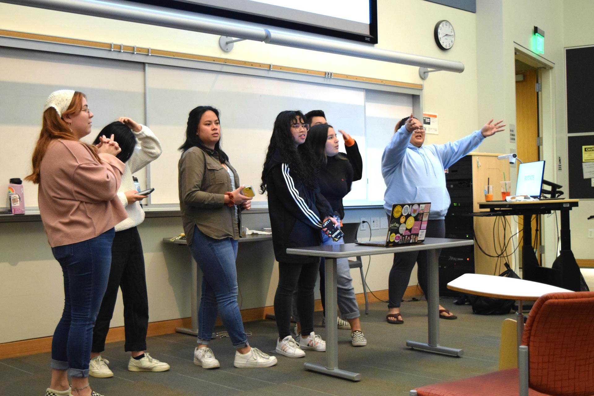
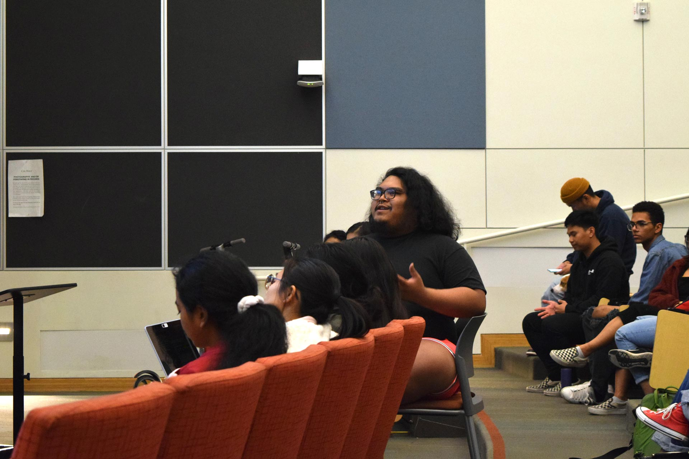
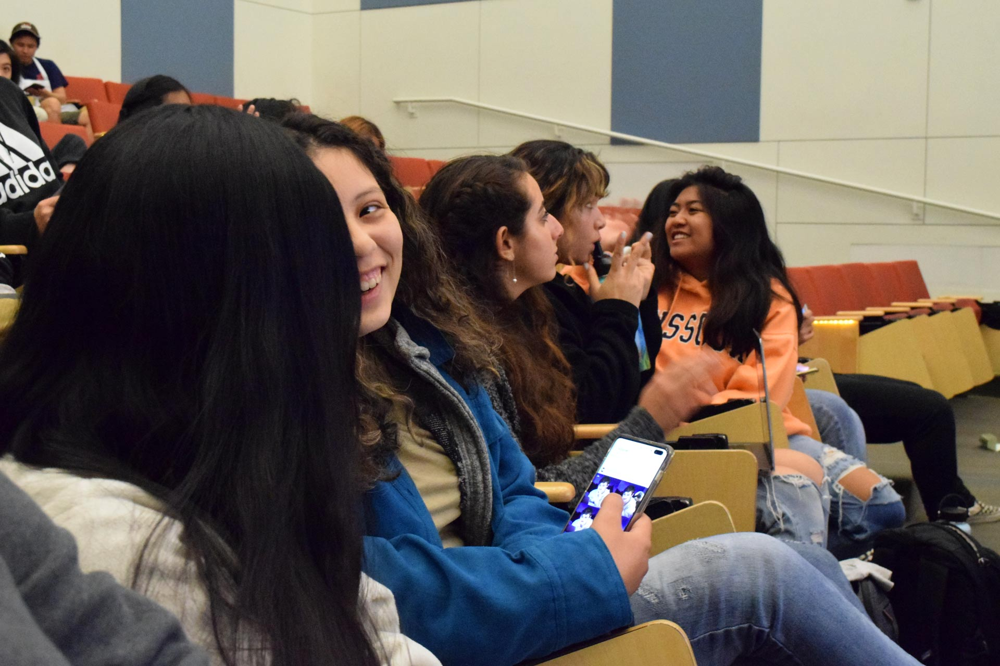
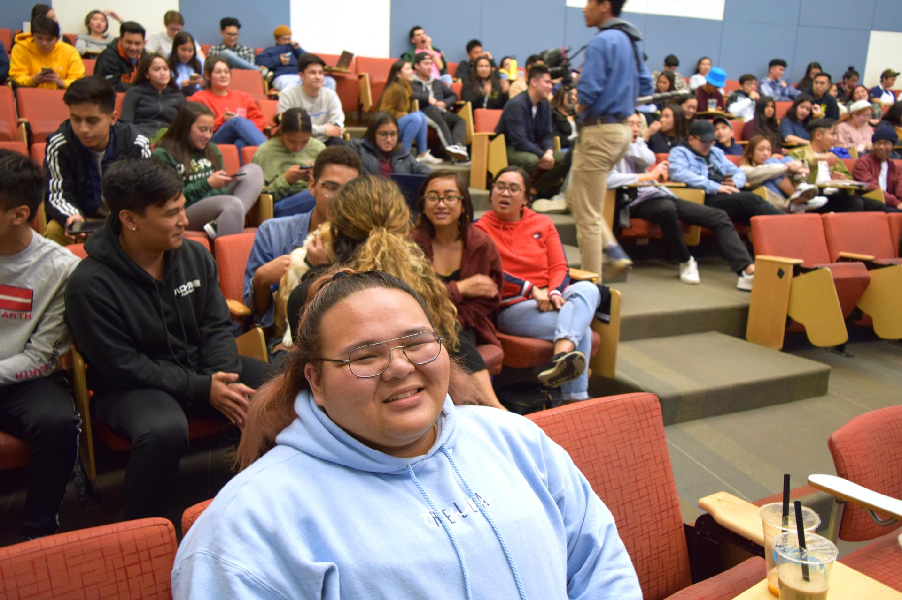
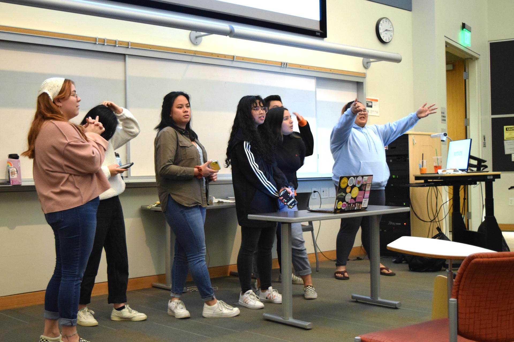
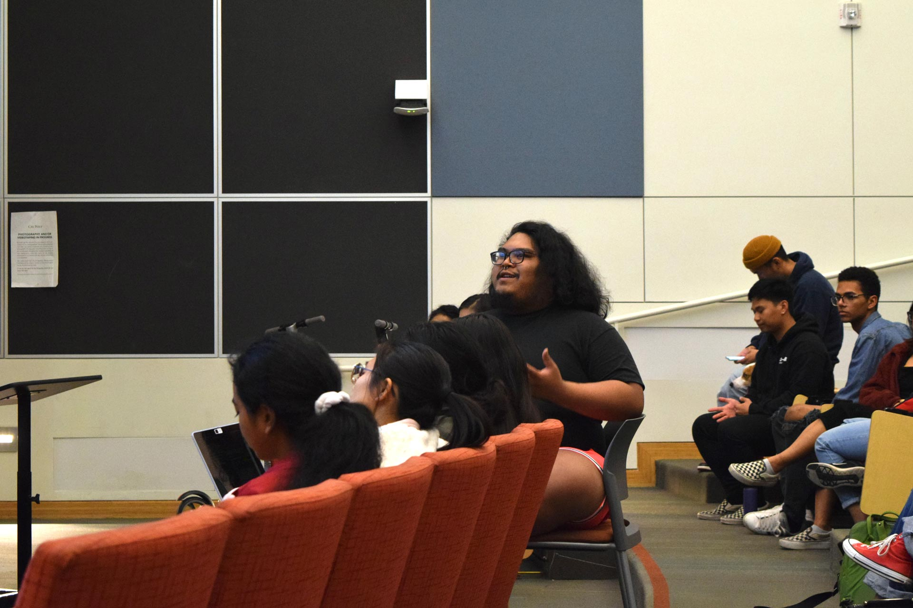
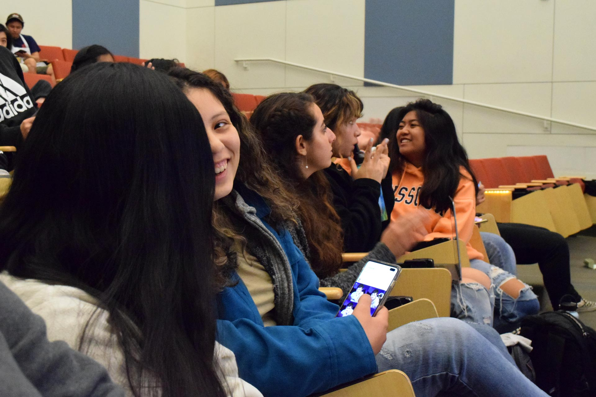
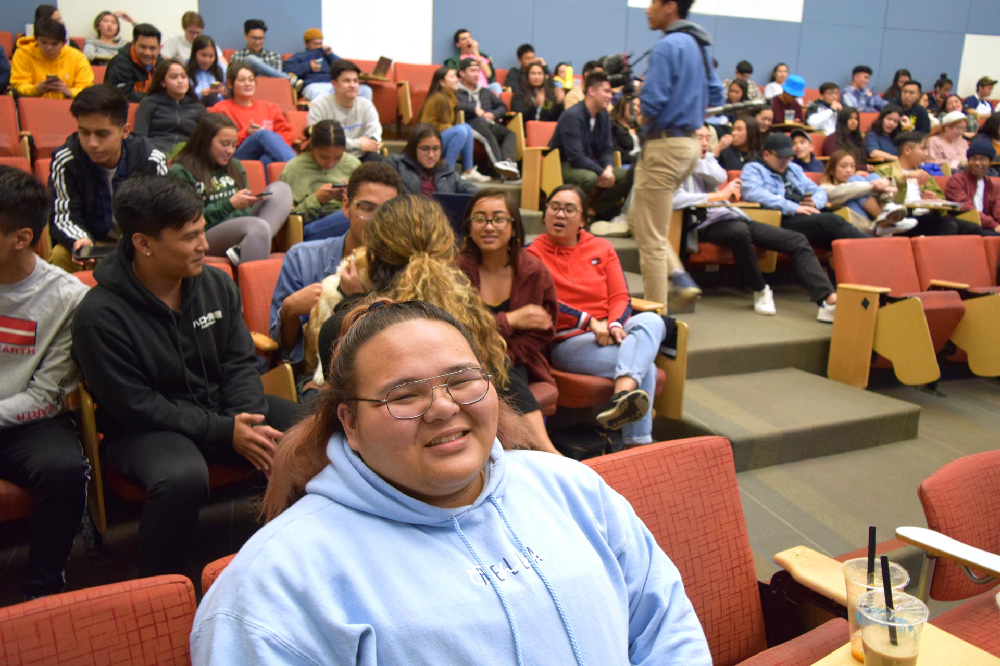